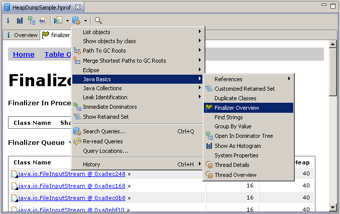

Finalizers are executed when the internal garbage collection cleans up the objects. Since you have no control over the finalizer execution, it is recommended not to use them. because the Memory can only be released when the finalize method finished so long running tasks in the finalizer can block the garbage collection. To get the finalizers overview select Finalizer Overview Query from the query list:
This query includes the following subqueries:
| Finalizer In Processing |
Extract object currently processed by Finalizer Thread. This query return the currently processed object by the Finalizer Thread if any. The returned object can be processed for one of the following reasons:
Use the finalizer queue query to check the queue. |
| Finalizer Queue |
This query shows the objects ready for finalization in their processing order. Following reasons can cause a full finalizer queue:
|
| Finalizer Thread Locals |
This query shows the thread locals of the daemon thread that performs the object finalizations. If there are any, this indicates miss-use in at least one of the processed finalizers ( finalize() implemented wrong) and might cause severe problems (e.g. unreclaimed memory permanently hold by the finalizer thread or finalizer processed under useless thread locals harming application logic) |
| Finalizer Thread | This query shows the daemon thread which performs the object finalizations. |